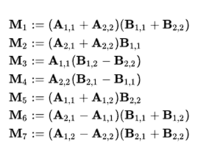
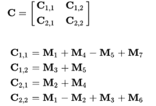

Método tradicional
En esta sección veremos cómo funciona y cómo se realiza el producto de dos matrices.
Método usando Strassen
En esta sección veremos cómo resolver y cómo funciona el producto de matrices mediante el algorítmo de Strassen.
Algoritmo de Strassen para producto de dos matrices
El método de strassen es útil para hacer un poco más simple el proceso de un producto de matrices, ya que reduce un poco la complejidad del mismo, concretamente de O(n3) a O(n2.81) de tal forma que es un poco más eficiente en cuanto a cálculos, sin embargo nos podemos encontrar en el problema que es un poco menos eficiente en cuanto al uso de memoria, pero todo dependerá de qué tan grande sean las matrices.
El algoritmo está basado en Divide and conquer o divide y vencerás. De tal forma que la idea es que si tenemos una Matriz de NxN con N>2 pues la reduzcamos a matrices más pequeñas de tal forma que podamos hacer 7 operaciones en las submatrices pequeñas. De tal forma que cuando tengamos una matriz NxN dónde N=2, pues se haga lo siguiente;
Para que con ello obtengamos:
Y con ésto obtenemos lo siguiente:
Y este proceso lo repetiremos en todas las submatrices de la matriz original. De tal forma que con ésto se resuelve la matriz completa usado strassen con divide y vencerás.
Video informativo
Video explicativo
Más información
Más información
Si necesitas más información en el siguiente link, podrás econtrar un poco más
Da click aquíMás información
Si necesitas más información en el siguiente link, podrás econtrar un poco más
Da click aquíMás información
Si necesitas más información en el siguiente link, podrás econtrar un poco más
Da click aquíProducto de matrices usando el método tradicional
¿Qué es este método?
Consiste en la combinación línea de dos matrices mediante la suma de sus elementos de la manera mas simple posible.
Para poder realizar la multiplicación entre 2 matrices, se debe cumplir la siguiente restricción:
- Siendo las matrices Am * n y Bo * p, el número de columnas de la matriz A(n) debe ser igual al número de filas de la matriz B(o).
- Adicionalmente, la matriz resultante tendrá las dimensiones del número de filas de A(m), por el número de columnas de B(p), dando como matriz resultante:
A m * n X Bn * p = Cm * p - No tanto una restricción, pero la multiplicación de matrices no cumple la propiedad conmutativa, lo que significa que el orden de las matrices afecta al producto resultante, lo que influye en los resultados y dimensiones de la matriz.
Método
Para la multiplicación de matrices por el método tradicional, se deben de multiplicar las filas de la matriz A, por las columnas de la matriz B. Esto se realiza multiplicando uno a uno cada elemento de la fila de A por cada elemento de la columna de B y se suman los resultados.
La selección de fila y columna nos dirán donde corresponden los resultados, así como se muestra en la imagen. Repetimos el proceso para obtener la matriz resultante.
Pseudo Código y complejidad
En programación, el método tradicional se encuentra realizado por una serie de ciclos que van obteniendo uno a uno el resultado de cada elemento de la matriz resultante. El código estaría ejemplificado tal que así:
Este método es conocido como método ingenuo o por fuerza bruta. Como podemos ver en el código, se hace la comprobación de que el numero de filas sea igual al numero de matrices de las respectivas matrices.

Y en este segmento se obtienen los resultados a sumar en cada elemento de la matriz C.